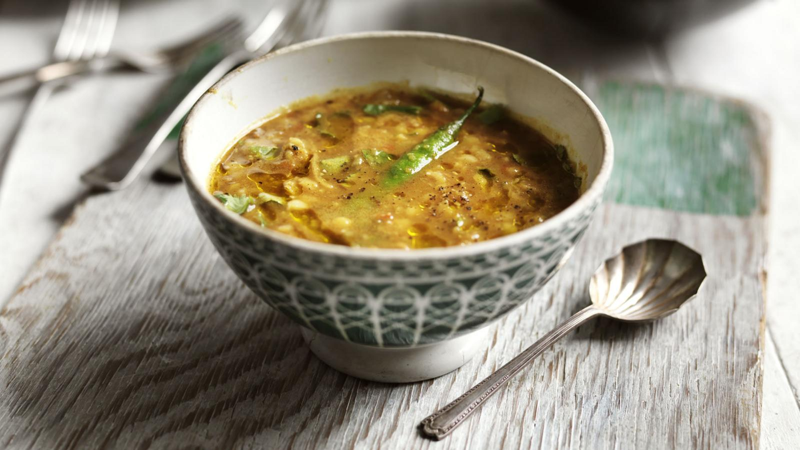

Delicious Tarka Dal

Description
Cheap, delicious and healthy – tarka dhal is the perfect comfort food supper. Tarka is the name given to the infused hot oil which is poured over the dhal
giving this classic Indian dish its incredible aroma.
We like to serve our
dhal with Indian bread, such as naan or roti. However you can also serve
this dish with rice for a more filling meal.
ingredients
- vegetable oil
- 1 onion, peeled + finely chopped
- 320g (11.3oz) red lentils, rinsed
- 2 tsp turmeric
- 2 tsp ground coriander
- salt + pepper
- 8 garlic cloves, peeled + sliced
- 8 green chillies
- 2 tsp cumin seeds
- 1/2 tsp fennel seeds
- 2 tsp black mustard seeds
- 1 thumb of fresh ginger, peeled + chopped
- 1 small handful of fresh coriander (optional)
- cooked rice or Indian bread, to serve (optional)
Steps
- Heat a little oil in a big pot on a medium heat. Once hot add the onion and fry for 8 minutes or until soft.
- Next, add the rinsed red lentils to the pot along with 1.5 litres (50fl.oz) of water, the turmeric, coriander and 1 teaspoon of salt.
- Stir, then bring to the boil. Next, reduce the heat to a simmer and cook with the lid on for 15 minutes.
- Remove the lid, reduce the heat and leave to cook on a low heat for the next few minutes while you make the tarka.
- Heat 6 tablespoons of oil in a frying pan on a medium-high heat. Once hot, add the garlic and fry for 1-2 minutes.
- Meanwhile, trim a tiny bit off the ends of the chillies to allow the heat to escape into the dhal.
- Next add the chillies to the oil along with the cumin seeds, fennel seeds, mustard seeds and ginger and fry for 1-2 minutes.
- Working quickly, add the oil mixture to the pot with the lentils. Stir to combine then simmer for 5 minutes or
longer if you prefer your dhal to be a thicker consistency. Serve with chopped fresh coriander (optional).
Recipe stolen from this website.
Homepage